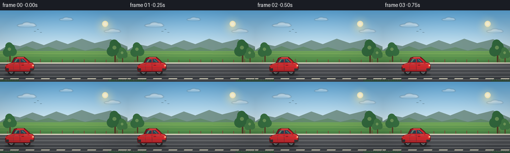
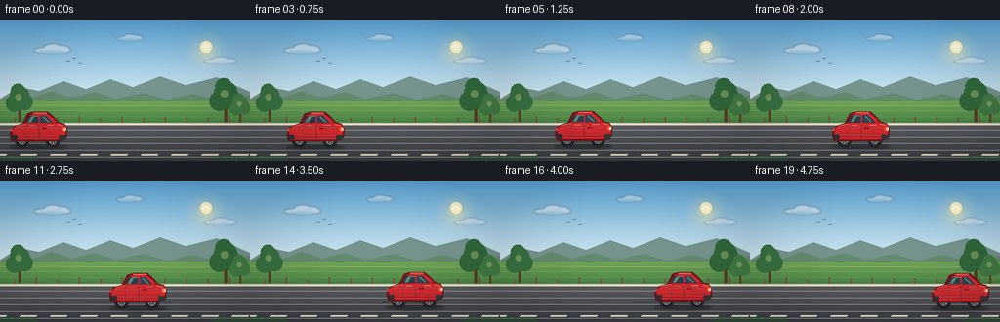
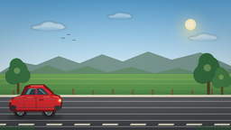
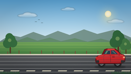

CODING AGENTS AS PIXEL WORLD MODELS
traex/DeepSeek-V4.1-Flash · instance_preservation_0028
点击播放 · 原生 RGB 像素
逐轮保存的候选
回放视频、检查图与代码变化。
每份候选均可单独播放。实际图片检查记录在下方工具轨迹中。
候选 01播放与检查图
点击播放 · 原生 RGB 像素

展开代码变化
--- 上一保存版本
+++ 本次保存版本
@@ -0,0 +1,415 @@
+from __future__ import annotations
+
+import math
+from pathlib import Path
+
+import numpy as np
+from PIL import Image, ImageDraw, ImageFilter
+
+import artifact_io
+
+
+WIDTH = 256
+HEIGHT = 144
+FRAMES = 20
+FPS = 4.0
+SCALE = 4
+RW = WIDTH * SCALE
+RH = HEIGHT * SCALE
+
+
+def sc(value: float) -> int:
+ return int(round(value * SCALE))
+
+
+def rgba(color: tuple[int, int, int], alpha: int = 255) -> tuple[int, int, int, int]:
+ return color[0], color[1], color[2], alpha
+
+
+def blend(a: tuple[int, int, int], b: tuple[int, int, int], t: float) -> tuple[int, int, int]:
+ return tuple(int(round(a[i] * (1.0 - t) + b[i] * t)) for i in range(3))
+
+
+def vertical_gradient(size: tuple[int, int], top: tuple[int, int, int],
+ bottom: tuple[int, int, int], start: int, end: int) -> Image.Image:
+ width, height = size
+ arr = np.zeros((height, width, 3), dtype=np.uint8)
+ span = max(1, end - start)
+ for y in range(height):
+ t = min(1.0, max(0.0, (y - start) / span))
+ arr[y, :, :] = blend(top, bottom, t)
+ return Image.fromarray(arr, "RGB")
+
+
+def soft_glow(radius: int, color: tuple[int, int, int], peak_alpha: int) -> Image.Image:
+ size = radius * 2 + 1
+ yy, xx = np.mgrid[:size, :size]
+ dist = np.sqrt((xx - radius) ** 2 + (yy - radius) ** 2) / max(1, radius)
+ alpha = np.clip(1.0 - dist, 0.0, 1.0) ** 2.1 * peak_alpha
+ arr = np.zeros((size, size, 4), dtype=np.uint8)
+ arr[:, :, 0] = color[0]
+ arr[:, :, 1] = color[1]
+ arr[:, :, 2] = color[2]
+ arr[:, :, 3] = alpha.astype(np.uint8)
+ return Image.fromarray(arr, "RGBA")
+
+
+def add_cloud(base: Image.Image, cx: float, cy: float, width: float, height: float,
+ alpha: int = 180) -> None:
+ layer = Image.new("RGBA", base.size, (0, 0, 0, 0))
+ d = ImageDraw.Draw(layer)
+ d.ellipse((sc(cx - width * 0.50), sc(cy - height * 0.30),
+ sc(cx + width * 0.48), sc(cy + height * 0.38)),
+ fill=rgba((236, 245, 249), alpha))
+ d.ellipse((sc(cx - width * 0.24), sc(cy - height * 0.62),
+ sc(cx + width * 0.24), sc(cy + height * 0.30)),
+ fill=rgba((249, 252, 252), alpha))
+ d.ellipse((sc(cx + width * 0.02), sc(cy - height * 0.45),
+ sc(cx + width * 0.43), sc(cy + height * 0.26)),
+ fill=rgba((242, 249, 251), alpha))
+ d.ellipse((sc(cx - width * 0.36), sc(cy + height * 0.03),
+ sc(cx + width * 0.32), sc(cy + height * 0.38)),
+ fill=rgba((220, 234, 241), alpha // 2))
+ base.alpha_composite(layer.filter(ImageFilter.GaussianBlur(sc(0.65))))
+
+
+def draw_tree(d: ImageDraw.ImageDraw, x: float, ground_y: float, height: float,
+ foliage: tuple[int, int, int], trunk: tuple[int, int, int]) -> None:
+ trunk_w = max(1.4, height * 0.075)
+ d.rounded_rectangle((sc(x - trunk_w / 2), sc(ground_y - height * 0.38),
+ sc(x + trunk_w / 2), sc(ground_y + 1)),
+ radius=sc(trunk_w / 2), fill=rgba(trunk))
+ crowns = [
+ (x - height * 0.16, ground_y - height * 0.54, height * 0.26),
+ (x + height * 0.15, ground_y - height * 0.57, height * 0.25),
+ (x, ground_y - height * 0.75, height * 0.30),
+ (x - height * 0.05, ground_y - height * 0.91, height * 0.22),
+ ]
+ for cx, cy, radius in crowns:
+ d.ellipse((sc(cx - radius), sc(cy - radius),
+ sc(cx + radius), sc(cy + radius)), fill=rgba(foliage))
+ d.ellipse((sc(x - height * 0.13), sc(ground_y - height * 0.82),
+ sc(x + height * 0.06), sc(ground_y - height * 0.63)),
+ fill=rgba(blend(foliage, (220, 235, 145), 0.32), 115))
+
+
+def draw_fence(d: ImageDraw.ImageDraw) -> None:
+ post = (112, 82, 59)
+ wire = (88, 91, 76)
+ for x in range(-7, 266, 22):
+ top = 99.0 + 1.1 * math.sin(x * 0.13)
+ d.rounded_rectangle((sc(x - 0.75), sc(top), sc(x + 0.75), sc(112)),
+ radius=sc(0.7), fill=rgba(post))
+ d.line((sc(x), sc(top + 1), sc(x), sc(111)), fill=rgba(blend(post, (220, 186, 122), 0.32)),
+ width=sc(0.35))
+ for y in (103.0, 108.2):
+ points = [(sc(x), sc(y + 0.8 * math.sin(x * 0.17))) for x in range(0, 257, 8)]
+ d.line(points, fill=rgba(wire, 170), width=sc(0.45))
+
+
+def build_background() -> Image.Image:
+ sky = vertical_gradient((RW, RH), (91, 166, 218), (229, 244, 247), 0, sc(91))
+ image = sky.convert("RGBA")
+
+ glow = soft_glow(sc(28), (255, 239, 172), 150)
+ image.alpha_composite(glow, (sc(183), sc(4)))
+ d = ImageDraw.Draw(image)
+ d.ellipse((sc(205), sc(21), sc(217), sc(33)), fill=rgba((255, 247, 201), 240))
+ d.ellipse((sc(207.5), sc(23.5), sc(214.5), sc(30.5)), fill=rgba((255, 253, 229), 255))
+
+ add_cloud(image, 54, 30, 39, 10, 125)
+ add_cloud(image, 133, 18, 28, 7, 110)
+ add_cloud(image, 226, 42, 34, 8, 100)
+
+ # Distant hills, kept low contrast so the car remains the visual anchor.
+ d = ImageDraw.Draw(image)
+ d.polygon([(sc(0), sc(80)), (sc(20), sc(68)), (sc(40), sc(72)), (sc(65), sc(62)),
+ (sc(88), sc(70)), (sc(113), sc(60)), (sc(136), sc(68)), (sc(164), sc(57)),
+ (sc(190), sc(66)), (sc(222), sc(58)), (sc(256), sc(73)),
+ (sc(256), sc(91)), (sc(0), sc(91))],
+ fill=rgba((117, 149, 143), 205))
+ d.polygon([(sc(0), sc(82)), (sc(16), sc(75)), (sc(34), sc(79)), (sc(53), sc(72)),
+ (sc(73), sc(79)), (sc(97), sc(73)), (sc(119), sc(80)), (sc(146), sc(74)),
+ (sc(171), sc(81)), (sc(197), sc(75)), (sc(224), sc(82)), (sc(256), sc(76)),
+ (sc(256), sc(96)), (sc(0), sc(96))],
+ fill=rgba((99, 139, 111), 230))
+
+ # Meadow bands and sunlit field rows.
+ field = vertical_gradient((RW, RH), (113, 166, 91), (58, 122, 63), sc(82), sc(112))
+ mask = Image.new("L", (RW, RH), 0)
+ md = ImageDraw.Draw(mask)
+ md.polygon([(0, sc(82)), (RW, sc(82)), (RW, sc(112)), (0, sc(112))], fill=255)
+ image.paste(field.convert("RGBA"), (0, 0), mask)
+ d = ImageDraw.Draw(image)
+ for y, color in ((87, (151, 188, 102)), (92, (127, 174, 91)),
+ (98, (102, 157, 78)), (104, (84, 143, 70))):
+ d.line((0, sc(y), RW, sc(y + 0.7)), fill=rgba(color, 100), width=sc(0.8))
+
+ # A few distant trees and a wooden fence frame the road.
+ draw_tree(d, 20, 103, 34, (55, 113, 66), (88, 66, 43))
+ draw_tree(d, 231, 104, 40, (49, 104, 61), (84, 61, 41))
+ draw_tree(d, 246, 105, 27, (66, 123, 70), (91, 68, 43))
+ draw_fence(d)
+
+ # Road surface.
+ road = vertical_gradient((RW, RH), (91, 94, 98), (57, 61, 66), sc(105), sc(143))
+ road_mask = Image.new("L", (RW, RH), 0)
+ rd = ImageDraw.Draw(road_mask)
+ rd.polygon([(0, sc(105)), (RW, sc(105)), (RW, RH), (0, RH)], fill=255)
+ image.paste(road.convert("RGBA"), (0, 0), road_mask)
+ d = ImageDraw.Draw(image)
+
+ # Sunlit curb and lane paint.
+ d.polygon([(0, sc(105)), (RW, sc(105)), (RW, sc(107.3)), (0, sc(107.3))],
+ fill=rgba((211, 209, 190), 210))
+ d.line((0, sc(106.3), RW, sc(106.3)), fill=rgba((255, 251, 221), 150), width=sc(0.5))
+ for x in range(-10, 270, 31):
+ d.polygon([(sc(x), sc(137.1)), (sc(x + 17), sc(137.1)),
+ (sc(x + 16), sc(138.4)), (sc(x - 1), sc(138.4))],
+ fill=rgba((232, 230, 205), 205))
+
+ rng = np.random.default_rng(22)
+ for _ in range(430):
+ x = float(rng.uniform(0, WIDTH))
+ y = float(rng.uniform(108, 143))
+ shade = int(rng.integers(65, 126))
+ alpha = int(rng.integers(18, 48))
+ d.point((sc(x), sc(y)), fill=rgba((shade, shade + 1, shade + 2), alpha))
+ for y in (112, 119, 126, 133, 140):
+ d.line((0, sc(y), RW, sc(y)), fill=rgba((184, 188, 188), 16), width=sc(0.45))
+
+ # Low grass blades at the near edge add depth without covering the car.
+ blade_color = (37, 91, 49)
+ for x in list(range(0, 39)) + list(range(218, 257)):
+ length = 2.2 + 2.3 * abs(math.sin(x * 0.71 + 0.5))
+ lean = 0.9 * math.sin(x * 0.43)
+ d.line((sc(x), sc(143.5), sc(x + lean), sc(143.5 - length)),
+ fill=rgba(blade_color, 225), width=sc(0.55))
+
+ # Birds and a tiny utility pole sit in the distant layer.
+ for bx, by, size in ((70, 43, 2.1), (76, 39, 1.7), (82, 45, 1.9)):
+ d.arc((sc(bx - size), sc(by - size * 0.55),
+ sc(bx), sc(by + size * 0.55)), 200, 340,
+ fill=rgba((55, 79, 86), 185), width=sc(0.45))
+ d.arc((sc(bx), sc(by - size * 0.55),
+ sc(bx + size), sc(by + size * 0.55)), 200, 340,
+ fill=rgba((55, 79, 86), 185), width=sc(0.45))
+
+ return image.convert("RGB")
+
+
+def polygon_points(points: list[tuple[float, float]]) -> list[tuple[int, int]]:
+ return [(sc(x), sc(y)) for x, y in points]
+
+
+def draw_wheel(layer: Image.Image, cx: float, cy: float, radius: float,
+ angle: float) -> None:
+ d = ImageDraw.Draw(layer)
+ d.ellipse((sc(cx - radius), sc(cy - radius),
+ sc(cx + radius), sc(cy + radius)), fill=rgba((25, 27, 29)))
+ d.ellipse((sc(cx - radius + 0.8), sc(cy - radius + 0.8),
+ sc(cx + radius - 0.8), sc(cy + radius - 0.8)),
+ outline=rgba((88, 91, 93), 150), width=sc(0.45))
+ rim_r = radius * 0.56
+ d.ellipse((sc(cx - rim_r), sc(cy - rim_r),
+ sc(cx + rim_r), sc(cy + rim_r)), fill=rgba((132, 137, 140)))
+ d.ellipse((sc(cx - rim_r * 0.83), sc(cy - rim_r * 0.83),
+ sc(cx + rim_r * 0.83), sc(cy + rim_r * 0.83)),
+ fill=rgba((78, 84, 89)))
+ for i in range(5):
+ a = angle + i * math.tau / 5.0
+ d.line((sc(cx + math.cos(a) * rim_r * 0.17),
+ sc(cy + math.sin(a) * rim_r * 0.17),
+ sc(cx + math.cos(a) * rim_r * 0.74),
+ sc(cy + math.sin(a) * rim_r * 0.74)),
+ fill=rgba((182, 187, 187), 225), width=sc(0.65))
+ hub = radius * 0.20
+ d.ellipse((sc(cx - hub), sc(cy - hub), sc(cx + hub), sc(cy + hub)),
+ fill=rgba((54, 58, 61)))
+ d.ellipse((sc(cx - hub * 0.46), sc(cy - hub * 0.46),
+ sc(cx + hub * 0.46), sc(cy + hub * 0.46)),
+ fill=rgba((201, 203, 199)))
+
+
+def draw_car(base: Image.Image, x: float, y: float, distance: float,
+ motion_fade: float) -> None:
+ # Soft contact shadow on the asphalt.
+ shadow = Image.new("RGBA", base.size, (0, 0, 0, 0))
+ sd = ImageDraw.Draw(shadow)
+ sd.ellipse((sc(x + 1), sc(y + 35.2), sc(x + 61), sc(y + 41.2)),
+ fill=rgba((20, 22, 24), 105))
+ sd.ellipse((sc(x + 7), sc(y + 35.8), sc(x + 55), sc(y + 40.3)),
+ fill=rgba((15, 17, 18), 100))
+ base.alpha_composite(shadow.filter(ImageFilter.GaussianBlur(sc(1.2))))
+
+ layer = Image.new("RGBA", base.size, (0, 0, 0, 0))
+ d = ImageDraw.Draw(layer)
+
+ # Wheels are drawn first so the body naturally forms the wheel arches.
+ wheel_angle = distance / 7.2
+ draw_wheel(layer, x + 14.5, y + 31.8, 7.35, wheel_angle)
+ draw_wheel(layer, x + 45.8, y + 31.8, 7.35, wheel_angle)
+
+ silhouette = [
+ (x + 3.5, y + 31.0),
+ (x + 2.2, y + 26.0),
+ (x + 3.0, y + 20.4),
+ (x + 7.2, y + 16.4),
+ (x + 15.0, y + 14.0),
+ (x + 20.1, y + 4.0),
+ (x + 25.8, y + 2.2),
+ (x + 40.8, y + 2.2),
+ (x + 47.2, y + 7.7),
+ (x + 51.7, y + 12.8),
+ (x + 57.4, y + 14.2),
+ (x + 60.4, y + 19.0),
+ (x + 60.2, y + 27.0),
+ (x + 56.5, y + 30.2),
+ (x + 50.2, y + 31.7),
+ (x + 9.0, y + 32.0),
+ ]
+ d.polygon(polygon_points(silhouette), fill=rgba((122, 20, 27)))
+ d.line(polygon_points(silhouette + [silhouette[0]]),
+ fill=rgba((83, 17, 22), 230), width=sc(0.8), joint="curve")
+
+ # Main painted body and subtle lower-body shading.
+ body = [
+ (x + 4.2, y + 20.0),
+ (x + 8.0, y + 16.5),
+ (x + 18.0, y + 14.5),
+ (x + 23.0, y + 5.2),
+ (x + 27.5, y + 3.8),
+ (x + 39.8, y + 3.8),
+ (x + 46.2, y + 8.8),
+ (x + 51.4, y + 13.8),
+ (x + 57.3, y + 15.0),
+ (x + 59.2, y + 19.6),
+ (x + 58.7, y + 26.5),
+ (x + 55.0, y + 29.2),
+ (x + 48.0, y + 29.8),
+ (x + 9.3, y + 29.7),
+ (x + 5.3, y + 28.3),
+ ]
+ d.polygon(polygon_points(body), fill=rgba((211, 42, 47)))
+
+ # Door and panel seams.
+ d.line((sc(x + 31.8), sc(y + 15.2), sc(x + 32.0), sc(y + 29.0)),
+ fill=rgba((126, 21, 26), 190), width=sc(0.65))
+ d.line((sc(x + 18.3), sc(y + 15.4), sc(x + 18.8), sc(y + 28.6)),
+ fill=rgba((149, 24, 29), 130), width=sc(0.5))
+ d.line((sc(x + 7.2), sc(y + 24.1), sc(x + 54.9), sc(y + 24.0)),
+ fill=rgba((128, 22, 27), 110), width=sc(0.5))
+
+ # Windows and reflections.
+ rear_window = [(x + 18.0, y + 13.1), (x + 22.6, y + 6.1),
+ (x + 31.1, y + 6.1), (x + 31.1, y + 13.1)]
+ front_window = [(x + 33.0, y + 6.1), (x + 39.0, y + 6.1),
+ (x + 46.1, y + 13.1), (x + 33.0, y + 13.1)]
+ d.polygon(polygon_points(rear_window), fill=rgba((37, 63, 82)))
+ d.polygon(polygon_points(front_window), fill=rgba((42, 70, 91)))
+ d.polygon(polygon_points([(x + 20.8, y + 12.6), (x + 24.0, y + 7.0),
+ (x + 27.0, y + 7.0), (x + 23.7, y + 12.6)]),
+ fill=rgba((119, 155, 171), 105))
+ d.line((sc(x + 35.8), sc(y + 7.1), sc(x + 42.0), sc(y + 12.5)),
+ fill=rgba((161, 190, 198), 95), width=sc(1.1))
+ d.line((sc(x + 25.7), sc(y + 6.4), sc(x + 31.0), sc(y + 6.4)),
+ fill=rgba((211, 227, 229), 130), width=sc(0.55))
+ d.line((sc(x + 18.4), sc(y + 13.2), sc(x + 46.0), sc(y + 13.2)),
+ fill=rgba((100, 23, 28), 210), width=sc(0.75))
+
+ # Roof and shoulder highlights create the glossy red finish.
+ d.line((sc(x + 26.0), sc(y + 3.1), sc(x + 39.8), sc(y + 3.1)),
+ fill=rgba((255, 116, 104), 220), width=sc(0.9))
+ d.line((sc(x + 9.0), sc(y + 16.4), sc(x + 18.0), sc(y + 14.4)),
+ fill=rgba((250, 87, 79), 205), width=sc(1.0))
+ d.line((sc(x + 51.0), sc(y + 14.8), sc(x + 56.8), sc(y + 16.0)),
+ fill=rgba((255, 112, 97), 220), width=sc(0.9))
+ d.line((sc(x + 8.0), sc(y + 18.5), sc(x + 53.0), sc(y + 18.1)),
+ fill=rgba((255, 104, 91), 100), width=sc(0.65))
+ d.line((sc(x + 8.0), sc(y + 27.5), sc(x + 54.0), sc(y + 27.3)),
+ fill=rgba((83, 18, 23), 180), width=sc(0.7))
+
+ # Bumpers, lamps, handles, and mirrors.
+ d.rounded_rectangle((sc(x + 4.0), sc(y + 25.2), sc(x + 9.5), sc(y + 30.0)),
+ radius=sc(1.0), fill=rgba((48, 50, 52)))
+ d.rounded_rectangle((sc(x + 52.2), sc(y + 25.3), sc(x + 59.2), sc(y + 30.0)),
+ radius=sc(1.0), fill=rgba((53, 55, 56)))
+ d.rounded_rectangle((sc(x + 55.4), sc(y + 17.2), sc(x + 60.0), sc(y + 21.8)),
+ radius=sc(0.9), fill=rgba((239, 72, 61)))
+ d.ellipse((sc(x + 57.1), sc(y + 18.3), sc(x + 59.6), sc(y + 20.9)),
+ fill=rgba((255, 226, 151)))
+ d.ellipse((sc(x + 57.5), sc(y + 18.7), sc(x + 59.0), sc(y + 20.1)),
+ fill=rgba((255, 250, 219), 240))
+ d.rounded_rectangle((sc(x + 2.7), sc(y + 18.7), sc(x + 4.9), sc(y + 22.1)),
+ radius=sc(0.7), fill=rgba((174, 18, 24)))
+ d.rectangle((sc(x + 3.0), sc(y + 19.1), sc(x + 4.4), sc(y + 21.5)),
+ fill=rgba((255, 84, 61), 200))
+ d.rounded_rectangle((sc(x + 35.0), sc(y + 18.1), sc(x + 40.0), sc(y + 19.4)),
+ radius=sc(0.55), fill=rgba((118, 20, 24)))
+ d.line((sc(x + 35.6), sc(y + 18.3), sc(x + 39.4), sc(y + 18.3)),
+ fill=rgba((239, 91, 78), 185), width=sc(0.35))
+ d.polygon(polygon_points([(x + 47.4, y + 12.3), (x + 50.0, y + 11.8),
+ (x + 50.5, y + 14.0), (x + 48.2, y + 14.2)]),
+ fill=rgba((176, 27, 34)))
+
+ # Subtle specular streak on the doors.
+ d.line((sc(x + 22.0), sc(y + 16.0), sc(x + 28.3), sc(y + 15.9)),
+ fill=rgba((255, 195, 173), 145), width=sc(0.55))
+ d.line((sc(x + 40.0), sc(y + 15.7), sc(x + 47.0), sc(y + 15.7)),
+ fill=rgba((255, 177, 155), 120), width=sc(0.5))
+
+ base.alpha_composite(layer)
+
+ # Motion streaks trail behind the car and fade quickly.
+ if motion_fade > 0.02:
+ streak = Image.new("RGBA", base.size, (0, 0, 0, 0))
+ st = ImageDraw.Draw(streak)
+ for i, (dy, length, a) in enumerate(((7.0, 17.0, 38), (18.0, 12.0, 28),
+ (28.0, 20.0, 34))):
+ start = max(1.0, x - length - i * 2.2)
+ end = max(start + 2.0, x - 3.2 - i * 1.2)
+ st.line((sc(start), sc(y + dy), sc(end), sc(y + dy - 0.25)),
+ fill=rgba((230, 241, 239), int(a * motion_fade)),
+ width=sc(0.55))
+ base.alpha_composite(streak)
+
+
+def finish_frame(image: Image.Image, frame_index: int) -> np.ndarray:
+ # Gentle vignette and warm highlights keep the frame cohesive at low resolution.
+ frame = image.convert("RGB").resize((WIDTH, HEIGHT), Image.Resampling.LANCZOS)
+ arr = np.asarray(frame, dtype=np.float32)
+ yy, xx = np.mgrid[:HEIGHT, :WIDTH]
+ nx = (xx - WIDTH / 2.0) / (WIDTH / 2.0)
+ ny = (yy - HEIGHT / 2.0) / (HEIGHT / 2.0)
+ vignette = np.clip(1.0 - 0.095 * (nx * nx + ny * ny), 0.88, 1.0)
+ arr *= vignette[:, :, None]
+ arr[:, :, 0] *= 1.012
+ arr[:, :, 2] *= 0.992
+ return np.clip(arr, 0, 255).astype(np.uint8)
+
+
+def render() -> list[np.ndarray]:
+ background = build_background()
+ frames: list[np.ndarray] = []
+ for index in range(FRAMES):
+ t = index / (FRAMES - 1)
+ # Constant cruising speed, with only a small suspension bob.
+ car_x = 8.0 + 176.0 * t
+ car_y = 91.3 + 0.65 * math.sin(math.tau * (2.15 * t + 0.08))
+ distance = car_x - 8.0
+ motion_fade = min(1.0, t * 5.0) * min(1.0, (1.0 - t) * 8.0 + 0.25)
+ canvas = background.convert("RGBA")
+ draw_car(canvas, car_x, car_y, distance, motion_fade)
+ frames.append(finish_frame(canvas, index))
+ return frames
+
+
+def main() -> None:
+ case_dir = Path(__file__).resolve().parent
+ frames = render()
+ artifact_io.save(frames, case_dir)
+ print(f"saved {len(frames)} frames to {case_dir}")
+
+
+if __name__ == "__main__":
+ main()
候选 02播放与检查图
点击播放 · 原生 RGB 像素


展开代码变化
--- 上一保存版本
+++ 本次保存版本
@@ -38,7 +38,7 @@
for y in range(height):
t = min(1.0, max(0.0, (y - start) / span))
arr[y, :, :] = blend(top, bottom, t)
- return Image.fromarray(arr, "RGB")
+ return Image.fromarray(arr)
def soft_glow(radius: int, color: tuple[int, int, int], peak_alpha: int) -> Image.Image:
@@ -51,7 +51,7 @@
arr[:, :, 1] = color[1]
arr[:, :, 2] = color[2]
arr[:, :, 3] = alpha.astype(np.uint8)
- return Image.fromarray(arr, "RGBA")
+ return Image.fromarray(arr)
def add_cloud(base: Image.Image, cx: float, cy: float, width: float, height: float,
可观测工具轨迹
实际执行的命令与返回图片。
命令 1exit 0
/bin/bash -c "pwd && rg --files -g 'prompt.txt' -g 'GENERATION_RULES.md' -g 'task_spec.json' -g '"'!node_modules'"' -g '"'!venv'"'"
命令 2exit 0
/bin/bash -c "ls -la && find . -maxdepth 2 -type f -printf '%p\\n' | sort | head -200"
命令 3exit 0
/bin/bash -c 'git status --short --branch 2>/dev/null || true'
命令 4exit 0
/bin/bash -c 'cat prompt.txt'
命令 5exit 0
/bin/bash -c 'cat GENERATION_RULES.md'
命令 6exit 0
/bin/bash -c 'cat task_spec.json'
命令 7exit 0
/bin/bash -c "sed -n '1,240p' artifact_io.py"
命令 8exit 0
/bin/bash -c 'python generate.py'
命令 9exit 1
/bin/bash -c "python -m py_compile generate.py artifact_io.py && python - <<'PY'
from pathlib import Path
import json
import numpy as np
from PIL import Image
p = Path('.')
frames = sorted((p/'frames').glob('*.png'))
assert len(frames) == 20
imgs = [np.asarray(Image.open(f).convert('RGB')) for f in frames]
assert all(a.shape == (144, 256, 3) and a.dtype == np.uint8 for a in imgs)
with np.load(p/'pixels.npz') as z:
assert z['pixels'].shape == (144, 256, 20)
packed = z['pixels'].astype(np.uint32)
decoded = np.stack([(packed >> 16) & 255, (packed >> 8) & 255, packed & 255], axis=-1).transpose(2,0,1,3).astype(np.uint8)
assert np.array_equal(decoded, np.stack(imgs))
html = (p/'index.html').read_text()
assert '__DATA__' not in html and '__ID__' not in html
print({'frames': len(frames), 'shape': imgs[0].shape, 'pixel_checksum': int(np.stack(imgs).sum()), 'html_mb': round(len(html)/1e6, 2)})
PY"命令 10exit 0
/bin/bash -c "python - <<'PY'
from pathlib import Path
import numpy as np
from PIL import Image
p = Path('.')
files = sorted((p/'frames').glob('*.png'))
imgs = [np.asarray(Image.open(f).convert('RGB')) for f in files]
assert len(imgs) == 20, len(imgs)
assert all(a.shape == (144, 256, 3) and a.dtype == np.uint8 for a in imgs)
data = np.load(p/'pixels.npz')
pixels = data['pixels']
assert pixels.shape == (144, 256, 20), pixels.shape
assert pixels.dtype == np.uint32, pixels.dtype
decoded = np.stack([(pixels >> 16) & 255, (pixels >> 8) & 255, pixels & 255], axis=-1).transpose(2,0,1,3).astype(np.uint8)
assert np.array_equal(decoded, np.stack(imgs))
html = (p/'index.html').read_text()
assert '__DATA__' not in html and '__ID__' not in html
print('frames', len(files), 'shape', imgs[0].shape, 'checksum', int(np.stack(imgs).sum()), 'html_bytes', len(html))
PY"命令 11exit 1
/bin/bash -c "python - <<'PY'
import base64, json, re
from pathlib import Path
from PIL import Image
import numpy as np
html = Path('index.html').read_text()
m = re.search(r'const DATA = (\\{.*?\\});\\n', html, re.S)
if not m:
m = re.search(r'DATA\\s*=\\s*(\\{.*?\\});', html, re.S)
assert m, 'embedded data not found'
data = json.loads(m.group(1))
first = np.frombuffer(base64.b64decode(data['first']), dtype='<u4').reshape(144,256)
rgb = np.stack([(first>>16)&255,(first>>8)&255,first&255],axis=-1).astype(np.uint8)
Image.fromarray(rgb).save('.tmp/player_first.png')
print('player decode ok:', rgb.shape, 'deltas:', len(data['deltas']), 'caption:', data['caption'])
PY"命令 12exit 0
/bin/bash -c 'rg -n "const DATA|__DATA__|deltas|first" index.html | head -10'
命令 13exit 0
/bin/bash -c "python - <<'PY'
import base64, json
from pathlib import Path
from PIL import Image
import numpy as np
html = Path('index.html').read_text()
marker = \"'use strict';const DATA=\"
start = html.index(marker) + len(marker)
decoder = json.JSONDecoder()
data, end = decoder.raw_decode(html[start:])
assert html[end + start:].startswith(',W=')
first = np.frombuffer(base64.b64decode(data['first']), dtype='<u4').reshape(144,256)
rgb = np.stack([(first>>16)&255,(first>>8)&255,first&255],axis=-1).astype(np.uint8)
expected = np.asarray(Image.open('frames/00.png'))
assert np.array_equal(rgb, expected)
print('player decode ok; frame 0 matches; deltas:', len(data['deltas']))
PY"命令 14exit 0
/bin/bash -c "python -W error::DeprecationWarning generate.py && python - <<'PY'
from pathlib import Path
import base64, json
import numpy as np
from PIL import Image
p = Path('.')
frames = sorted((p/'frames').glob('*.png'))
assert len(frames) == 20
arrs = [np.asarray(Image.open(f)) for f in frames]
assert all(a.shape == (144, 256, 3) and a.dtype == np.uint8 for a in arrs)
data = np.load(p/'pixels.npz')
assert data['pixels'].shape == (144, 256, 20) and data['pixels'].dtype == np.uint32
rgb = np.stack([(data['pixels']>>16)&255, (data['pixels']>>8)&255, data['pixels']&255], axis=-1).transpose(2,0,1,3).astype(np.uint8)
assert np.array_equal(rgb, np.stack(arrs))
html = (p/'index.html').read_text()
start = html.index(\"'use strict';const DATA=\") + len(\"'use strict';const DATA=\")
payload, end = json.JSONDecoder().raw_decode(html[start:])
assert html[start+end:].startswith(',W=')
first = np.frombuffer(base64.b64decode(payload['first']), dtype='<u4').reshape(144,256)
decoded = np.stack([(first>>16)&255,(first>>8)&255,first&255],axis=-1).astype(np.uint8)
assert np.array_equal(decoded, arrs[0])
print('verified:', len(frames), 'frames, 256x144 RGB, 19 deltas, player frame match')
PY"视觉工具实际返回图片 1

视觉工具实际返回图片 2
视觉工具实际返回图片 3

视觉工具实际返回图片 4

视觉工具实际返回图片 5

保存候选 2 份；完成命令 14 次；可验证图片返回 5 张。原始 API 响应与完整日志保留在本地。